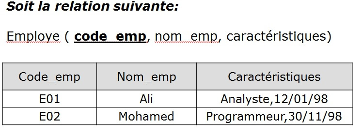

Question :

Cette relation est en : : Réponses : Première forme normale Deuxième forme normale Troisième forme normale BCFN
Soit la relation suivante: Produit (code_produit, désignation, code_tva, taux_tva) Cette relation est en: Réponses : 2FN 3FN BCFN 3FN et BCFN